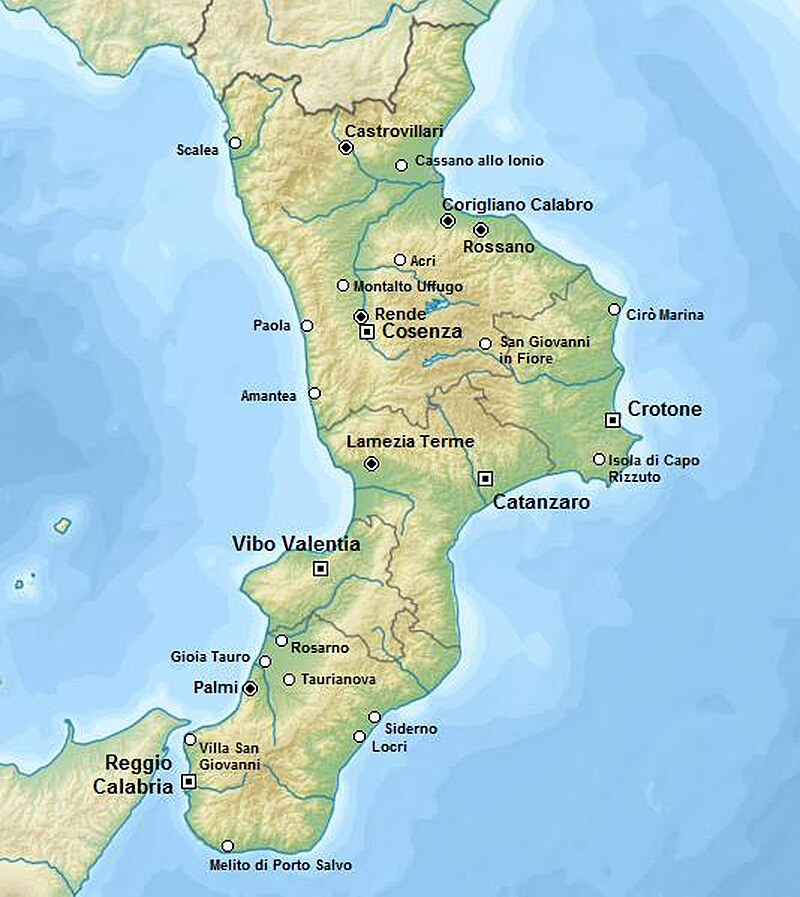
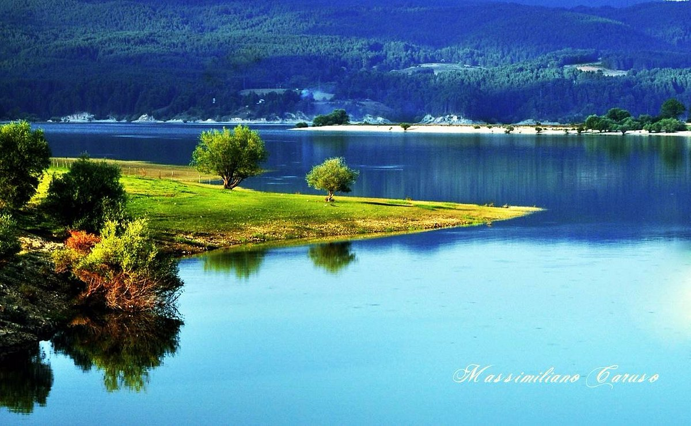

| Nome |
Calabria |
| Capoluogo |
Catanzaro (CZ) |
| Data di Istituzione |
1948 |
| Altitudine media |
??? m.s.l.m |
| Superficie |
15.222 km^2 |
| Abitanti (agosto 2023) |
1.833.973 |
| Densità |
120 ab/km^2 |
| Comuni |
404 |
| Province |
Cosenza (CS), Crotone (KR), Vibo Valentia (VV), Città Metropolitana di Reggio Calabria (RC) |
| Confini |
Basilicata, Mar Mediterraneo |
| Patrono |
S.Francesco da Paola, S.Bruno di Colonia |
| PIL procapite (2017) |
17.200€ |
Posto da visitare assolutamente: Parco della Sila - Provincia di Cosenza (CS)
Il Parco Nazionale della Sila è un'area protetta situata nella Calabria,
nel sud dell'Italia.
È uno dei più grandi parchi nazionali italiani e abbraccia tre massicci montuosi:
la Sila Grande, la Sila Greca e la Sila Piccola.
Ecco alcuni dettagli sul Parco Nazionale della Sila:
Geografia:
La Sila è una vasta regione montuosa situata nell'entroterra della Calabria.
Il Parco Nazionale della Sila è caratterizzato da boschi, laghi, fiumi e
una vasta gamma di flora e fauna.
La sua elevata altitudine contribuisce alla presenza di un clima fresco e rigido.
Massicci montuosi:
La Sila è divisa in tre massicci montuosi principali:
Sila Grande, Sila Greca e Sila Piccola.
Ognuno di questi massicci ha le sue caratteristiche geografiche e ambientali,
offrendo una varietà di paesaggi all'interno del parco.
Laghi e fiumi:
Il Parco Nazionale della Sila è punteggiato da numerosi laghi,
tra cui il Lago Arvo e il Lago Cecita. I fiumi, come il Neto e il Crocchio,
attraversano la regione, contribuendo a creare un ambiente
naturale ricco di biodiversità.
Flora e fauna:
La Sila è famosa per la sua ricca biodiversità.
La flora comprende foreste di conifere, faggi, pini e lecci.
Tra la fauna, è possibile avvistare lupi, cinghiali, caprioli,
aquile reali e numerose altre specie di uccelli.
Attività ricreative:
Il Parco Nazionale della Sila offre numerose attività ricreative all'aperto.
Ci sono sentieri escursionistici che consentono di esplorare la bellezza
naturale della zona. Durante l'inverno,
la Sila diventa anche una destinazione per gli amanti dello sci.
Centri abitati:
All'interno del parco, ci sono diversi centri abitati,
tra cui San Giovanni in Fiore, Camigliatello Silano e
Silvana Mansio.
Questi villaggi offrono un'atmosfera autentica e sono
spesso caratterizzati da architettura tradizionale.
Tradizioni culturali:
La Sila è ricca di tradizioni culturali, folclore e artigianato locale.
I visitatori possono imbattersi in feste tradizionali,
sagre e eventi che celebrano la cultura e le radici della regione.
Osservatorio astronomico:
La Sila ospita anche l'Osservatorio Astronomico di Timpone Stella,
un luogo ideale per gli appassionati di astronomia per osservare
il cielo stellato, grazie alla sua posizione lontana da inquinamento luminoso.
Il Parco Nazionale della Sila è quindi un paradiso naturale
che offre una varietà di esperienze per gli amanti della natura,
dagli appassionati di trekking agli osservatori di stelle.
La sua bellezza paesaggistica e la ricchezza di biodiversità
ne fanno una destinazione affascinante per chi visita la Calabria.
